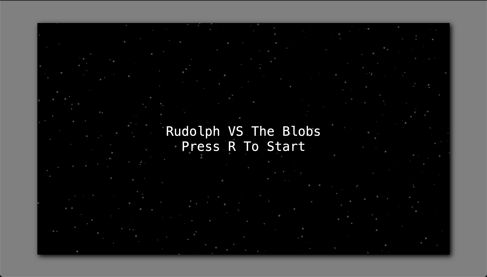
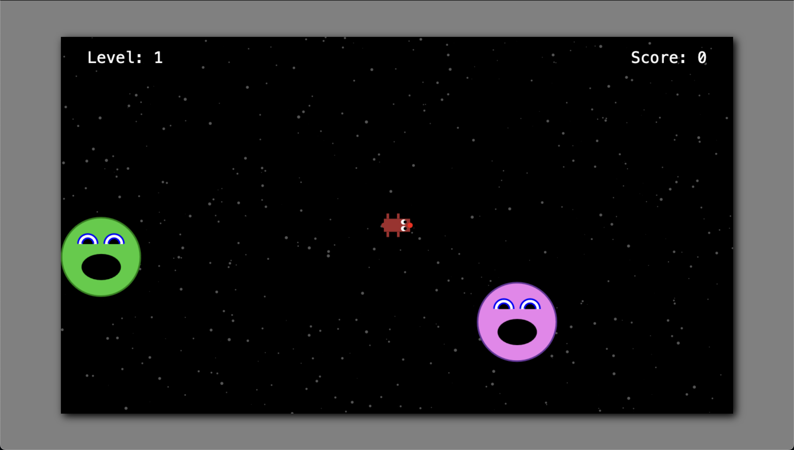

Stars
Our game takes place in space, but our background is just plain black. We could make this look a whole lot nicer with some stars. Let's make some!
These stars won't be changing throughout the game, so there's no reason for us to waste compute in drawing them every frame. What we'll do is employ a second background canvas that we just draw to once, and our game canvas will sit on top of that.
First, we'll add a new canvas to our
game-container.
<!-- index.html -->
<div id="game-container">
<div id="title-screen">
<div>Rudolph VS The Blobs</div>
<div>Press R To Start</div>
</div>
<canvas id="bg-canvas"></canvas>
<canvas id="game-canvas"></canvas>
</div>
Then we'll add styles to let our other elements rest on top of it.
/* style.css */
#game-container {
/* ... */
position: relative;
}
#title-screen {
/* ... */
z-index: 1;
position: relative;
}
#game-canvas {
display: none;
z-index: 1;
position: relative;
}
#bg-canvas {
position: absolute;
top: 0px;
left: 0px;
}
There's a little CSS quirk that's worth mentioning in this code. To
ensure that title screen and game canvas are rendered on top of our
background canvas, we've added a
z-index property to both of them.
BUT, to make z-index work, we have to explicitly declare a
position property for the selector that
we're using z-index on. Just one of the
myriad gotchas that make CSS such a joy to work with... We've also
added position: relative to the
#game-container, because
position: absolute positions an element
relative to its nearest positioned ancestor, meaning if we
don't add an appropriate position to the
#game-container, our
#bg-canvas will be positioned relative
to the window instead.
Now that we have our surface, let's draw some stars on it.
// main.ts
// ...
const bgcanvas = document.getElementById("bg-canvas") as HTMLCanvasElement;
bgcanvas.width = 1280;
bgcanvas.height = 720;
const bgctx = bgcanvas.getContext("2d") as CanvasRenderingContext2D;
// draw starfield
bgctx.fillStyle = "#555";
for (let i = 0; i < 550; i++) {
const x = Math.random() * bgcanvas.width;
const y = Math.random() * bgcanvas.height;
const radius = Math.random() * 3;
bgctx.beginPath();
bgctx.arc(x, y, radius, 0, Math.PI * 2);
bgctx.fill();
}

Looks pretty good! We've used grey instead of white for the stars so they're not too present and distracting. We're just creating circles with a radius between 0 and 3 at random locations on our canvas. We've structured this so that it will work during the game as well.
We could stop here, but I'd like to try to add a little visual interest to our admittedly-still-pretty-boring title screen by making the stars scroll across the screen. Instead of displaying the stars immediately as they're generated, let's save their information in an array so we can update their positions over time.
// main.ts
// ...
// create starfield
let starfield: { pos: Vec2; radius: number }[] = [];
for (let i = 0; i < 550; i++) {
const x = Math.random() * bgcanvas.width;
const y = Math.random() * bgcanvas.height;
const radius = Math.random() * 3;
starfield.push({pos: new Vec2(x, y), radius});
}
Now let's move the stars across the screen.
// main.ts
// imports...
let gameStarted = false;
// ...
function startGame(evt: KeyboardEvent): void {
if (evt.key === "r") {
// ...
gameStarted = true;
}
}
// ...
let lastTime = 0;
let starSpeed = 30;
function animate(ms: number): void {
if (gameStarted) return;
requestAnimationFrame(animate);
const dt = ms - lastTime;
const dts = dt / 1000;
lastTime = ms;
bgctx.clearRect(0, 0, bgcanvas.width, bgcanvas.height);
for (let star of starfield) {
// update
star.pos.x -= starSpeed * dts;
screenWrap(star, bgctx);
// draw
bgctx.beginPath();
bgctx.arc(star.pos.x, star.pos.y, star.radius, 0, Math.PI * 2);
bgctx.fill();
}
}
requestAnimationFrame(animate);
This is more or less a copy of our game loop, just a little smaller.
Each animation frame, we clear our background canvas and move/draw
each star in turn. By giving each star a
pos: Vec2, we can make use of our
existing screenWrap function to
have infinite scrolling. We've added a
gameStarted flag to allow us to
break out of our animation loop once the game starts. It would be too
distracting to have the stars move during gameplay, so this will
freeze them in place.
We now have a much nicer background than before. Next, we'll start looking at particle effects so we can add some satisfying splats when an enemy (or the player) is destroyed, as well as a propulsion indicator for our player.